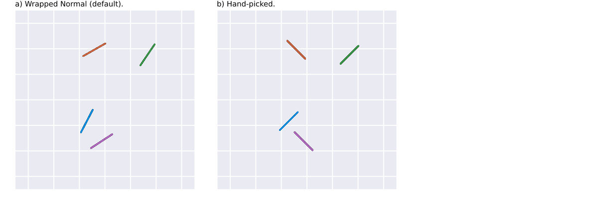

Theory
This section describes the theoretical framework of the clugen algorithm, starting with a general Overview, then moving on to a Detailed description.
Overview
Clugen is an algorithm for generating multidimensional clusters. Each cluster is supported by a line segment, the position, orientation and length of which guide where the respective points are placed. For brevity, line segments will be referred to as lines.
Given an $n$-dimensional direction vector $\mathbf{d}$ (and a number of additional parameters, which will be discussed shortly), the clugen algorithm works as follows ($^*$ means the algorithm step is stochastic):
- Normalize $\mathbf{d}$.
- $^*$Determine cluster sizes.
- $^*$Determine cluster centers.
- $^*$Determine lengths of cluster-supporting lines.
- $^*$Determine angles between $\mathbf{d}$ and cluster-supporting lines.
- For each cluster:
- $^*$Determine direction of the cluster-supporting line.
- $^*$Determine distance of point projections from the center of the cluster-supporting line.
- Determine coordinates of point projections on the cluster-supporting line.
- $^*$Determine points from their projections on the cluster-supporting line.
Figure 1 provides a stylized overview of the algorithm's steps.
Figure 1 - Stylized overview of the clugen algorithm. Background tiles are 10 units wide and tall, when applicable.
The example in Figure 1 was generated with the following parameters, the exact meaning of each will be discussed shortly:
| Parameter values | Description |
|---|---|
| $n=2$ | Number of dimensions. |
| $c=4$ | Number of clusters. |
| $p=200$ | Total number of points. |
| $\mathbf{d}=\begin{bmatrix}1 & 1\end{bmatrix}^T$ | Average direction. |
| $\theta_\sigma=\pi/16\approx{}11.25^{\circ}$ | Angle dispersion. |
| $\mathbf{s}=\begin{bmatrix}10 & 10\end{bmatrix}^T$ | Average cluster separation. |
| $l=10$ | Average line length. |
| $l_\sigma=1.5$ | Line length dispersion. |
| $f_\sigma=1$ | Cluster lateral dispersion. |
Additionally, all optional parameters (not listed above) were left to their default values. These will also be discussed next. This example can be reproduced and plotted with the following instructions (the StableRNGs package is used to keep the example reproducible between Julia versions):
julia> using CluGen, Plots, StableRNGs
julia> r = clugen(2, 4, 200, [1, 1], pi/16, [10, 10], 10, 1.5, 1; rng = StableRNG(9999));
julia> plot(r.points[:,1], r.points[:,2], seriestype = :scatter, group=r.clusters)Detailed description
In this section we provide a detailed description of the algorithm and its parameters. We start by listing and describing all parameters (mandatory and optional), and then analyze the algorithm in detail, highlighting how each parameter influences the end result.
Algorithm parameters
The clugen algorithm (and consequently, the clugen() function) has mandatory and optional parameters, listed and described in the tables below. The optional parameters are set to sensible defaults, and in many situations may be left unchanged. Nonetheless, these allow all of the algorithm's steps to be fully customized by the user.
Mandatory parameters
| Symbol | Parameter | Description |
|---|---|---|
| $n$ | num_dims | Number of dimensions. |
| $c$ | num_clusters | Number of clusters. |
| $p$ | num_points | Total number of points to generate. |
| $\mathbf{d}$ | direction | Average direction of cluster-supporting lines ($n \times 1$). |
| $\theta_\sigma$ | angle_disp | Angle dispersion of cluster-supporting lines (radians). |
| $\mathbf{s}$ | cluster_sep | Average cluster separation in each dimension ($n \times 1$). |
| $l$ | llength | Average length of cluster-supporting lines. |
| $l_\sigma$ | llength_disp | Length dispersion of cluster-supporting lines. |
| $f_\sigma$ | lateral_disp | Cluster lateral dispersion, i.e., dispersion of points from their projection on the cluster-supporting line. |
Optional parameters
| Symbol | Parameter | Default value | Description |
|---|---|---|---|
| $\phi$ | allow_empty | false | Allow empty clusters? |
| $\mathbf{o}$ | cluster_offset | zeros(num_dims) | Offset to add to all cluster centers ($n \times 1$). |
| $p_\text{proj}()$ | proj_dist_fn | "norm" | Distribution of point projections along cluster-supporting lines. |
| $p_\text{final}()$ | point_dist_fn | "n-1" | Distribution of final points from their projections. |
| $c_s()$ | clusizes_fn | CluGen.clusizes() | Distribution of cluster sizes. |
| $c_c()$ | clucenters_fn | CluGen.clucenters() | Distribution of cluster centers. |
| $l()$ | llengths_fn | CluGen.llengths() | Distribution of line lengths. |
| $\theta_\Delta()$ | angle_deltas_fn | CluGen.angle_deltas() | Distribution of line angle deltas (w.r.t. $\mathbf{d}$). |
The algorithm in detail
The clugen algorithm is presented in Overview. In this section we will analyze each of the algorithms steps in detail.
1. Normalize $\mathbf{d}$
This is a basic step, which consists of converting $\mathbf{d}$ to a unit vector:
\[\hat{\mathbf{d}} = \cfrac{\mathbf{d}}{\left\lVert\mathbf{d}\right\rVert}\]
2. Determine cluster sizes
Cluster sizes are given by the $c_s()$ function according to:
\[\mathbf{c_s} = c_s(c, p, \phi)\]
where $\mathbf{c_s}$ is an $c \times 1$ integer vector containing the final cluster sizes, $c$ is the number of clusters, $p$ is the total number of points, and $\phi$ is a boolean which determines whether empty clusters are acceptable.
The $c_s()$ function is an optional parameter, allowing users to customize its behavior. By default, $c_s()$ is implemented by the CluGen.clusizes() function, which behaves according to the following algorithm:
- Determine the size $p_i$ of each cluster $i$ according to $p_i\sim\left\lfloor\max\left(\mathcal{N}(\frac{p}{c}, (\frac{p}{3c})^2),0\right)\right\rceil$, where $\lfloor\rceil$ denotes the round to nearest integer function, and $\mathcal{N}(\mu,\sigma^2)$ represents the normal distribution with mean $\mu$ and variance $\sigma^2$.
- Assure that the final cluster sizes add up to $p$ by incrementing the smallest cluster size while $\sum_{i=1}^c p_i<p$ or decrementing the largest cluster size while $\sum_{i=1}^c p_i>p$. This step is delegated to the
CluGen.fix_num_points!()helper function. - If $\neg\phi\wedge p\ge c$ then, for each empty cluster $i$ (i.e., $p_i=0$), increment $p_i$ and decrement $p_j$, where $j$ denotes the largest cluster. This step is delegated to the
CluGen.fix_empty!()helper function.
Figure 2 demonstrates possible cluster sizes with various definitions of $c_s()$ for $c=4$ and $p=5000$. The default behavior, implemented in the CluGen.clusizes() function, is shown in Figure 2a, while Figures 2b-d present results obtained with custom user functions. Figure 2b displays cluster sizes obtained with the discrete uniform distribution over $\left\{1, 2, \ldots, \frac{2p}{c}\right\}$, corrected with CluGen.fix_num_points!(). In turn, Figure 2c highlights cluster sizes obtained with the Poisson distribution with $\lambda=\frac{p}{c}$, also corrected with CluGen.fix_num_points!(). The cluster sizes shown in Figure 2d were determined with the same distribution (Poisson, $\lambda=\frac{p}{c}$), but were not corrected. Thus, cluster sizes do not add up to $p$, highlighting the fact that this is not a requirement of the clugen algorithm, i.e., user-defined $c_s()$ implementations can consider $p$ a hint rather than an obligation.
Figure 2 - Possible cluster sizes with various definitions of $c_s()$ for $c=4$ and $p=5000$.
3. Determine cluster centers
Cluster sizes are given by the $c_c()$ function according to:
\[\mathbf{C} = c_c(c, \mathbf{s}, \mathbf{o})\]
where $\mathbf{C}$ is an $c \times n$ matrix containing the final cluster centers, $c$ is the number of clusters, $\mathbf{s}$ is the average cluster separation ($n \times 1$ vector), and $\mathbf{o}$ is an $n \times 1$ vector of cluster offsets.
The $c_c()$ function is an optional parameter, allowing users to customize its behavior. By default, $c_c()$ is implemented by the CluGen.clucenters() function, which determines the cluster centers according to:
\[\mathbf{C}=c\mathbf{U} \cdot \operatorname{diag}(\mathbf{s}) + \mathbf{1}\,\mathbf{o}^T\]
where $\mathbf{U}$ is an $c \times n$ matrix of random values drawn from the uniform distribution between -0.5 and 0.5, and $\mathbf{1}$ is an $c \times 1$ vector with all entries equal to 1.
Figure 3 shows scatters plots of the results generated by clugen for two different implementations of the $c_c()$ function, namely using the uniform the distribution (the default, implemented by the CluGen.clucenters() function, Figure 3a), and direct specification of cluster centers (Figure 3b).
Figure 3 - The output of clugen for two different implementations of the $c_c()$ function for finding cluster centers: a) the default, using the uniform distribution; b) hand-picked centers. All parameters are the same as in Figure 1, except for $p$, which is set to 5000.
4. Determine lengths of cluster-supporting lines
The lengths of the cluster-supporting lines are given by the $l()$ function according to:
\[\pmb{\ell} = l(c, l, l_\sigma)\]
where $\pmb{\ell}$ is an $c \times 1$ vector containing the final lengths of the cluster-supporting lines, $c$ is the number of clusters, $l$ is the average length, and $l_\sigma$ is the length dispersion.
The $l()$ function is an optional parameter, allowing users to customize its behavior. By default, $l()$ is implemented by the CluGen.llengths() function, which determines the $\ell_i$ length of each cluster-supporting line $i$ according to:
\[\ell_i\sim\left|\mathcal{N}(l,l_\sigma^2)\right|\]
where $\left|\mathcal{N}(\mu,\sigma^2)\right|$ represents the folded normal distribution with mean $\mu$ and variance $\sigma^2$.
Figure 4 shows cluster-supporting line lengths obtained with different implementations of $l()$.
 Figure 4 - Line lengths for different implementations of $l()$: a) the default, using the folded normal distribution; b) using the Poisson distribution, with $\lambda=l$; c) using the uniform distribution in the interval $\left[0, 2l\right[$; and, d) hand-picked lengths, more specifically $\pmb{\ell}=\begin{bmatrix}2 & 8 & 16 & 32\end{bmatrix}^T$. Cluster centers, as well as parameters $l$ and $l_\sigma$, are the same as for the example shown in Figure 1.
Figure 4 - Line lengths for different implementations of $l()$: a) the default, using the folded normal distribution; b) using the Poisson distribution, with $\lambda=l$; c) using the uniform distribution in the interval $\left[0, 2l\right[$; and, d) hand-picked lengths, more specifically $\pmb{\ell}=\begin{bmatrix}2 & 8 & 16 & 32\end{bmatrix}^T$. Cluster centers, as well as parameters $l$ and $l_\sigma$, are the same as for the example shown in Figure 1.
5. Determine angles between $\mathbf{d}$ and cluster-supporting lines
The angles between $\mathbf{d}$ and the cluster-supporting lines are given by the $\theta_\Delta()$ function according to:
\[\mathbf{\Theta_\Delta} = \theta_\Delta(c, \theta_\sigma)\]
where $\mathbf{\Theta_\Delta}$ is an $c \times 1$ vector containing the final angle differences between $\mathbf{d}$ and the cluster-supporting lines, $c$ is the number of clusters, and $\theta_\sigma$ is the angle dispersion.
The $\theta_\Delta()$ function is an optional parameter, allowing users to customize its behavior. By default, $\theta_\Delta()$ is implemented by the CluGen.angle_deltas() function, which determines the $\theta_{\Delta i}$ angle difference between $\mathbf{d}$ and the $i$-th cluster-supporting line according to:
\[\theta_{\Delta i}\sim\mathcal{WN}_{-\pi/2}^{\pi/2}(0,\theta_\sigma^2)\]
where $\mathcal{WN}_{-\pi/2}^{\pi/2}(\mu,\sigma^2)$ represents the wrapped normal distribution with mean $\mu$, variance $\sigma^2$, and support in the $\left[-\pi/2,\pi/2\right]$ interval, and $\theta_\sigma$ is the angle dispersion of the cluster-supporting lines.
Figure 5 shows the final direction of the cluster-supporting lines for two different implementations of $\theta_\Delta()$.
 Figure 5 - Final directions of the cluster supporting-lines for different implementations of $\theta_\Delta()$: a) the default, where angle differences were obtained using the wrapped normal distribution; and, d) hand-picked angle differences, more specifically $\mathbf{\Theta_\Delta}=\begin{bmatrix}0 & \frac{\pi}{2} & 0 & \frac{\pi}{2}\end{bmatrix}^T$. Cluster centers, as well as the angle dispersion $\theta_\sigma$, are the same as for the example shown in Figure 1.
6. For each cluster $i$:
6.1. Determine direction of the cluster-supporting line
In order to obtain the $\hat{\mathbf{d}}_i$ final direction of cluster $i$ supporting line, the following algorithm is used:
- 1. Find random vector $\mathbf{r}$ with each component taken from the uniform distribution between -0.5 and 0.5.
- 2. Normalize $\mathbf{r}$:
\[\hat{\mathbf{r}}=\cfrac{\mathbf{r}}{\left\lVert\mathbf{r}\right\rVert}\]
- 3. If $|\theta_{\Delta i}| > \pi/2$ or $n=1$, set $\hat{\mathbf{d}}_i=\hat{\mathbf{r}}$ and terminate the algorithm.
- 4. If $\hat{\mathbf{r}}$ is parallel to $\hat{\mathbf{d}}$ go to 1.
- 5. Determine vector $\mathbf{d}_\perp$ orthogonal to $\hat{\mathbf{d}}$ using the first iteration of the Gram-Schmidt process:
\[\mathbf{d}_\perp=\hat{\mathbf{r}}-\cfrac{\hat{\mathbf{d}}\cdot\hat{\mathbf{r}}}{\hat{\mathbf{d}}\cdot\hat{\mathbf{d}}}\:\hat{\mathbf{d}}\]
- 6. Normalize $\mathbf{d}_\perp$:
\[\hat{\mathbf{d}}_\perp=\cfrac{\mathbf{d}_\perp}{\left\lVert\mathbf{d}_\perp\right\rVert}\]
- 7. Determine vector $\mathbf{d}_i$ at angle $\theta_{\Delta i}$ with $\hat{\mathbf{d}}$:
\[\mathbf{d}_i=\hat{\mathbf{d}}+\tan(\theta_{\Delta i})\hat{\mathbf{d}}_\perp\]
- 8. Normalize $\mathbf{d}_i$:
\[\hat{\mathbf{d}}_i=\cfrac{\mathbf{d}_i}{\left\lVert\mathbf{d}_i\right\rVert}\]
6.2. Determine distance of point projections from the center of the cluster-supporting line
The distance of point projections from the center of the cluster-supporting line is given by the $p_\text{proj}()$ function according to:
\[\mathbf{w}_i = p_\text{proj}(\ell_i, p_i)\]
where $\mathbf{w}_i$ is an $p_i \times 1$ vector containing the distance of each point projection to the center of the line, while $\ell_i$ and $p_i$ are the line length and number of points in cluster $i$, respectively.
The $p_\text{proj}()$ function is an optional parameter, allowing users to customize its behavior. CluGen.jl provides two concrete implementations out of the box, specified in Julia by passing "norm" or "unif" to clugen()'s proj_dist_fn parameter. These work as follows:
"norm"(default) - Each element of $\mathbf{w}_i$ is derived from $\mathcal{N}(0, (\frac{\ell_i}{6})^2)$, i.e., from the normal distribution, centered on the cluster-supporting line center ($\mu=0$) and with a standard deviation of $\sigma=\frac{\ell_i}{6}$, such that the length of the line segment encompasses $\approx$ 99.73% of the generated projections. Consequently, some projections may be placed outside the line's end points."unif"- Each element of $\mathbf{w}_i$ is derived from $\mathcal{U}(-\frac{\ell_i}{2}, \frac{\ell_i}{2})$, i.e., from the continuous uniform distribution in the interval $\left[-\frac{\ell_i}{2}, \frac{\ell_i}{2}\right[$. Thus, projections will be uniformly dispersed along the cluster-supporting line.
The impact of various implementations of $p_\text{proj}()$ is demonstrated in Figure 6. Figures 6a and 6b show the clusters generated with the "norm" and "unif" options, respectively, while Figures 6c and 6d highlight custom user functions implementing the Laplace and Rayleigh distributions, respectively. All parameters are set as in Figure 1, except for $p_\text{proj}()$ in the case of Figures 6b-6d, and $p$, which is set to 5000.
 Figure 6 - Clusters generated for various implementations of $p_\text{proj}()$: a) the default, where line center distances are drawn for the normal distribution, specified using the in-built
Figure 6 - Clusters generated for various implementations of $p_\text{proj}()$: a) the default, where line center distances are drawn for the normal distribution, specified using the in-built "norm" option; b) in which center distances are derived from the uniform distribution, via the in-built "unif" option; c) where line center distances are obtained from a custom user function implementing the Laplace distribution; and, d) in which a custom user function returns center distances drawn from the Rayleigh distribution. All parameters are set as in Figure 1, except for $p_\text{proj}()$ in the case of Figures 6b-6d, and $p$, which is set to 5000.
6.3. Determine coordinates of point projections on the cluster-supporting line
This is a deterministic step performed by the points_on_line() function using the vector formulation of the line equation, as follows:
\[\mathbf{P}_i^\text{proj}=\mathbf{1}\,\mathbf{c}_i^T + \mathbf{w}_i\hat{\mathbf{d}}_i^T\]
where $\mathbf{P}_i^\text{proj}$ is the $p_i \times n$ matrix of point projection coordinates on the line, $\mathbf{1}$ is an $p_i \times 1$ vector with all entries equal to 1, $\mathbf{c}_i$ are the coordinates of the line center ($n \times 1$ vector), $\mathbf{w}_i$ is the distance of each point projection to the center of the line ($p_i \times 1$ vector obtained in the previous step), and $\hat{\mathbf{d}}_i$ is the direction of the cluster-supporting line for cluster $i$.
6.4. Determine points from their projections on the cluster-supporting line
The final cluster points, obtained from their projections on the cluster-supporting line, are given by the $p_\text{final}()$ function according to:
\[\mathbf{P}_i^\text{final} = p_\text{final}(\mathbf{P}_i^\text{proj}, f_\sigma, \ell_i, \hat{\mathbf{d}}_i, \mathbf{c}_i)\]
where $\mathbf{P}_i^\text{final}$ is a $p_i \times n$ matrix containing the coordinates of the generated points, $\mathbf{P}_i^\text{proj}$ is the $p_i \times n$ matrix of projection coordinates (determined in the previous step), and $f_\sigma$ is the lateral dispersion parameter. In turn, $\ell_i$, $\hat{\mathbf{d}}_i$ and $\mathbf{c}_i$ are the length, direction and center of the cluster-supporting line.
The $p_\text{final}()$ function is an optional parameter, allowing users to customize its behavior. CluGen.jl provides two concrete implementations out of the box, specified in Julia by passing "n-1" or "n" to clugen()'s point_dist_fn parameter. These work as follows:
"n-1"(default) - Points are placed on a hyperplane orthogonal to the cluster-supporting line and intersecting the point's projection. This is done by obtaining $p_i$ random unit vectors orthogonal to $\hat{\mathbf{d}}_i$, and determining their magnitude using the normal distribution ($\mu=0$, $\sigma=f_\sigma$). These vectors are then added to the respective projections on the cluster-supporting line, yielding the final cluster points. This behavior is implemented in theCluGen.clupoints_n_1()function."n"- Points are placed around their respective projections. This is done by obtaining $p_i$ random unit vectors, and determining their magnitude using the normal distribution ($\mu=0$, $\sigma=f_\sigma$). These vectors are then added to the respective projections on the cluster-supporting line, yielding the final cluster points. This behavior is implemented in theCluGen.clupoints_n()function.
Figure 7 highlights the differences between these two approaches in 2D, where a hyperplane is simply a line.
Figure 7 - Example of how the final cluster points are obtained in 2D when using the built-in implementations for $p_\text{final}()$.
In general, points can be placed using a "n-1" or "n" strategy using any distribution. Figure 8 displays several examples for various implementations of $p_\text{final}()$, either based on "n-1" or "n" strategy, using different distributions. Figures 8a and 8b show the built-in "n-1" and "n" strategies making use of the normal distribution. Figures 8c-8f highlight some possibilities with custom user functions. Figure 8c shows the effect of using the exponential distribution in a "n-1" strategy, while Figure 8d displays the result of using a bimodal distribution with the same strategy. A more complex distribution, producing "hollow" clusters with a "n" strategy, is employed in Figures 8e and 8f, with the latter also having the $p_\text{proj}()$ function set to "unif". The remaining parameters (for all subfigures) are set as in Figure 1, except for $p$, which is set to 5000.
 Figure 8 - Examples of various implementations of $p_\text{final}()$. Figures a and b shown the effect of the built-in implementations, while Figures c-f display results obtained using custom user functions.
Figure 8 - Examples of various implementations of $p_\text{final}()$. Figures a and b shown the effect of the built-in implementations, while Figures c-f display results obtained using custom user functions.